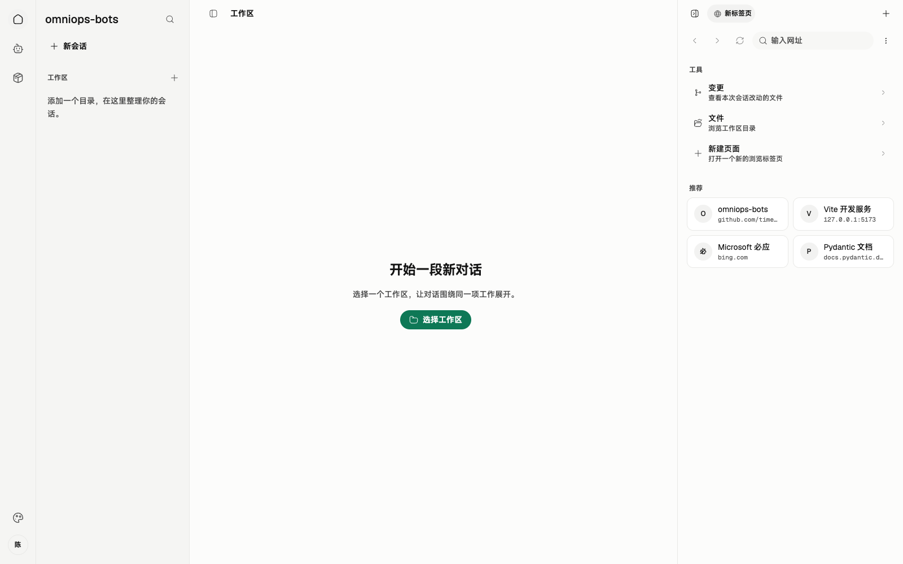
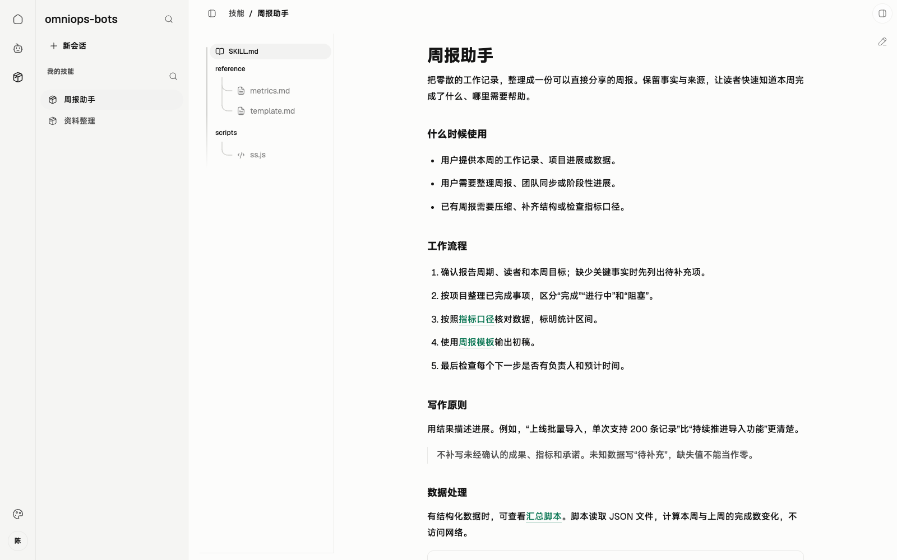
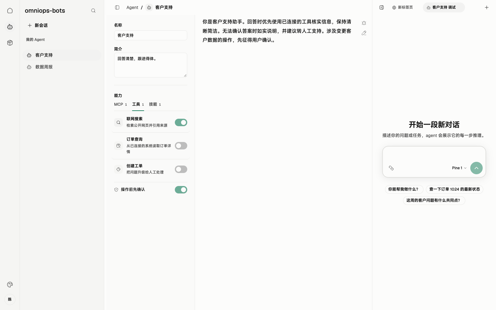

00 总体架构
串讲重点：服务端编排流程、管理官方物料；客户端编辑实验、装配执行。 本组文档描述已确认的 MVP 目标，不表示能力已经实现。
US
现有页面与缺口

实拍现有 Web 演示界面；资源与执行数据来自演示适配器。
沿用导航与工作台结构。待补：现有账号身份与运维权限、服务端连接和重连状态。
- 作为运维人员，我希望在客户端编辑、实验并发布 Skill 和 Agent，让团队使用确定的版本。
- 作为普通用户，我希望同步并使用官方能力，也能自由编辑自己的本地资源。
- 作为流程编排方，我希望把客户端 Agent 当作工具调用，由它在 Chrome 完成实际操作。
- 作为用户，我希望知道运行了什么、结果是什么，并在断线后仍能交付已有结果。
 用例图 · 角色与行为关系
用例图 · 角色与行为关系简要设计
现有内部 LangGraph 服务继续管理流程上下文，将客户端 Agent 调用封装成工具。桌面端连接服务，在客户端管理的专用 Chrome 中执行运维操作。Tauri 承担桌面包装，本次不引入其他 Rust 业务模块作为前置条件。
| 边界 |
承载内容 |
| HTTPS |
草稿上传、正式发布、版本清单、物料下载 |
| WebSocket |
调用、取消、任务状态、最终结果、快照与接收确认 |
| 客户端本地 |
未同步编辑、已下载历史版本、会话快照和执行记录 |
官方 Agent、Skill 由服务端管理；本地资源自由编辑，服务端不调用本地 Agent。
服务端
- 复用已有账号与 Token，识别并校验运维权限；普通用户不能写入官方资源。
- 保存官方草稿修订和不可变发布版本，提供清单与文件包。
- Skill 正式发布时联动生成受影响 Agent 的新版本，标签全部由运维人员手填，不增加审核。
- 编排调用、传入上下文、按调用 ID 取消，接收结果并确认；忙时如何再调度由服务端决定。
客户端
- 提供本地编辑、草稿实验和运维上传入口；官方已发布配置只读。
- 新会话同步清单，按需下载缺失物料；调用前核对版本，失败不拿旧版代替。
- 运行前固定装配快照，检查所需内置工具；同一 Chrome 每轮只执行一个任务，忙时直接返回。
- 展示过程、保存结果并补传；只向服务端发送状态、最终结果和运行快照。
详细设计
 设计图 · 点击缩放查看
设计图 · 点击缩放查看打开可交互架构图
按图串讲一次远端调用：服务端发起 → 客户端核对版本、补齐物料 → 固定快照并执行 → 本地保存结果 → 回传并等待确认。每次调用新建独立会话，服务端传入上下文；客户端任务会话只读，但可按任务要求操作 Chrome。
断线期间执行继续，重连只补传、不重跑。进程重启后未完成任务报告“执行中断、结果未知”。服务端高可用、业务输入输出协议与内部调度不在本次范围。
串讲验收围绕“编辑发布 → 同步装配 → 调用执行 → 结果恢复”四条完整业务流程，观察结果而非展开内部实现。规格依据：Issue #3。
01 · SKILL
串讲重点：Skill 是完整文件包；实验先固定快照，正式发布再联动 Agent。
US
现有页面与缺口

实拍现有 Web 演示界面；资源与执行数据来自演示适配器。
沿用文件阅读和草稿编辑。待补：官方/本地、完整包版本、选择 Agent 实验、上传草稿与联动发布；当前保存草稿仍是本地单文件保存。
- 作为运维人员，我在客户端编辑草稿并按需上传，让服务端集中保存修订。
- 作为运维人员，我在 Skill 页面勾选一个 Agent，即可实验尚未上传的草稿。
- 作为运维人员，我手填 Skill 和受影响 Agent 的新标签，一次完成正式发布。
- 作为用户，我使用官方已发布 Skill；需要修改时复制成本地 Skill，保留官方原件。
 用例图 · 角色与行为关系
用例图 · 角色与行为关系简要设计
Skill 的版本单位是整个文件包，包括说明、脚本、引用资料和随包资源。实验、发布都对应确定的完整快照，日志、截图等实验产物另存。
本地 Skill 可自由编辑，不设发布标签。官方 Skill 的草稿修订、正式版本由服务端保存；客户端保留未同步编辑和下载缓存。普通用户只同步、查看、使用官方已发布版本，仍可编辑自己的本地 Skill。
服务端
- 复用现有登录与 Token，判定运维权限；草稿上传、创建版本、正式发布均由服务端校验。
- 保存完整草稿修订与不可变发布包，提供版本清单和 HTTPS 下载。
- 正式发布时列出受影响的官方 Agent，按新 Skill 版本生成新装配、新 Agent ID。
- 接收运维人员手填的 Skill 标签及各受影响 Agent 的新标签，一次完成联动发布。保存草稿不联动 Agent。
客户端
- 提供编辑、保存、实验、上传与发布入口；官方发布版本保持只读。
- 实验只需在页面选择现有 Agent，临时装配当前草稿，运行前固定完整快照，复用本地会话界面。
- 未上传草稿也可实验，不修改模板 Agent，不要求发布标签或实验通过证明。
- 新会话按 Agent 清单下载缺失包；保留已下载旧版本，不自动覆盖或清理。已有会话继续使用初始快照。
详细设计
查看现有草稿编辑器
 现有 Web 实拍 · 演示数据 · 点击查看原图
现有 Web 实拍 · 演示数据 · 点击查看原图当前支持编辑、预览和本地保存；完整包修订、服务端上传与发布仍需补齐。
设计图 · 点击缩放查看打开交互图：Skill 生命周期
沿图讲三条路径：
- 编辑 → 实验：本地编辑形成完整实验快照，选择 Agent 后运行；实验产物留在执行记录中，不混入 Skill 包。
- 编辑 → 上传草稿：运维人员按需上传，服务端保存修订；此时不产生 Agent 联动发布。
- 草稿 → 正式发布：手填
v.1.0.0 形式的新标签，并补齐受影响 Agent 的新标签；发布后内容不可变，标签不能改指向、覆盖或重用。
本地 Agent 可以直接装配官方已发布 Skill。修改官方内容走“复制成本地 Skill”；维护官方内容走“编辑草稿并发布新版”。两条路径都不改写历史发布包。MVP 不增加审核、强制实验门槛、自动标签或历史清理。
02 · MCP
串讲重点：MCP 是 Agent 使用的外部能力；同步接入配置，不管理外部服务版本。
US
现有页面与缺口
 实拍现有 Web 演示界面；资源与执行数据来自演示适配器。
实拍现有 Web 演示界面；资源与执行数据来自演示适配器。
沿用能力列表与详情弹窗。待补：实际远端连接配置或引用、连接状态和失败原因；MCP 配置跟随 Agent 同步，不增加独立发布体系。
- 作为运维人员，我为官方 Agent 配好所需 MCP，让用户同步 Agent 后获得对应配置。
- 作为用户，我通过客户端连接远端 MCP，包括内部服务提供的 MCP，执行 Agent 所需操作。
- 作为用户，我查看当次启用的 MCP 和工具清单，了解运行时实际使用了哪些能力。
 用例图 · 角色与行为关系
用例图 · 角色与行为关系简要设计
支持远端 MCP 接入，内部服务也可以提供 MCP。MCP 连接配置或引用属于 Agent 装配物料，与 Agent 一并同步；外部 MCP 服务实现本身不进入本项目的版本与发布体系。
Agent 内容 ID 包含其选定的 MCP 装配配置，因此更改官方 Agent 的装配需要形成新的 Agent 版本。这里固定的是配置选择，并不承诺固定远端 MCP 的服务实现、工具行为或发布周期。
服务端
- 保存官方 Agent 所需 MCP 配置或引用，作为 Agent 物料提供同步。
- 对官方 Agent 配置的写入沿用运维权限校验；普通用户使用已发布配置。
- 服务端若提供 MCP，按自身服务职责维护该接入点；本规格不新增 MCP 版本仓库或发布流程。
- LangGraph 仍负责流程编排，具体 Agent 执行与 MCP 调用由客户端承接，不因 MCP 来源改变分工。
客户端
- 随官方 Agent 同步所需 MCP 连接配置，按当次装配建立远端连接并使用工具。
- 官方 Agent 的 MCP 配置保持只读；本地 Agent 按自身配置使用 MCP。
- 在会话中展示工具调用过程；运行快照记录启用的 MCP 与工具清单。
- 密钥和 Token 不进入运行快照；配置的同步不意味着将凭据写入可观测记录。
详细设计
设计图 · 点击缩放查看打开交互图：MCP 接入边界
沿图讲两条线： 物料线由服务端把 Agent 的 MCP 配置同步到客户端；执行线由客户端 Agent 连接实际 MCP 服务、调用工具，再纳入该轮任务结果。
MCP 服务可以来自内部服务，也可以来自其他已配置的远端地址。服务端作为配置来源、MCP 作为工具服务，是两个职责，部署在同一处也不合并其含义。
MVP 沿用任务执行记录和快照追溯接入情况，不新增 MCP 发布标签、服务实现下载、独立升级器或监控平台。具体鉴权方式、传输参数随实际接入确定，本次串讲不扩展为协议设计。
03 · builtinTool
串讲重点：内置工具随桌面端交付；Agent 选择要用的工具，运行前检查是否具备。
现有页面与缺口
 实拍现有 Web 演示界面；资源与执行数据来自演示适配器。
实拍现有 Web 演示界面；资源与执行数据来自演示适配器。
沿用工具选择。待补：运行前的缺失工具提示和桌面更新入口。截图中的“操作前先确认”属于旧演示，不是本期新增的审核要求。
- 作为运维人员，我为 Agent 选择所需内置工具，让装配明确表达执行需要。
- 作为用户，我运行 Agent 前获知缺少的工具，按提示更新桌面端。
- 作为用户，我查看当次工具清单和桌面端版本，追溯实际执行环境。
 用例图 · 角色与行为关系
用例图 · 角色与行为关系
builtinTool 的实现随桌面应用版本交付，不建立独立工具包发布与同步系统。Agent 装配记录选定的工具，所选 builtinTool 是 Agent 内容 ID 的组成部分。
Agent 版本固定工具选择；桌面端版本说明实际实现。 同一个 Agent 在不同桌面版本上运行时，运行快照保留实际桌面端版本和工具清单，满足追溯需要，不另造一套工具发布标签。
- 保存官方 Agent 所需的 builtinTool 清单，随 Agent 物料同步。
- 通过已有 Agent 发布流程管理工具选择；官方装配改变后生成新的 Agent ID，并由运维人员手填发布标签。
- 接收客户端因缺少所需工具而返回的失败结果，由既有流程决定后续处理。
- 不向客户端单独分发 builtinTool 实现，不将工具更新混入 Skill 文件包同步。
- 根据已安装桌面版本提供可用内置工具，执行前检查 Agent 所需工具是否齐全。
- 缺少任一所需工具时直接失败，明确提示缺失原因及更新桌面端；不带着不完整装配开始执行。
- 工具齐全后按 Agent 装配执行，并在客户端展示工具调用过程。
- 运行快照记录启用的工具清单和桌面端版本；调用状态、错误与起止时间仍放入执行记录。
设计图 · 点击缩放查看打开交互图：内置工具可用性检查
沿图讲一次运行前检查： 读取 Agent 所需工具清单，对照客户端实际可用工具；齐全则继续运行，缺失则结束本次任务并提示更新桌面端。完成更新后由用户或服务端重新发起调用，不自动重跑失败任务。
Skill 缺失与 builtinTool 缺失采取不同处理：Skill 仍按物料同步规则下载所需完整文件包；builtinTool 通过桌面应用更新获得。二者最终都服务于同一份 Agent 装配，但交付渠道各自明确。
本章只确认工具可用性检查与交付职责。桌面版本检查、下载和安装见 05 · 桌面端更新；MVP 不增加内置工具独立安装、热更新或单独版本仓库。
04 · Agent：装配、发布与会话
串讲重点：Agent 定义“装配什么能力”，运行快照说明“这次实际用了什么”。
US
现有页面与缺口
 实拍现有 Web 演示界面；资源与执行数据来自演示适配器。
实拍现有 Web 演示界面；资源与执行数据来自演示适配器。
沿用配置与提示词编辑器。待补：官方/本地身份、固定 Skill 版本、Agent 内容 ID、人工标签和快照入口；当前阅读模式只读不代表官方版本权限。
- 作为用户，我能自由编辑本地 Agent，也能选择官方 Agent 发起自己的会话。
- 作为运维人员，我能发布固定装配的官方 Agent，用手填标签标识发布版本。
- 作为服务端调用方，我能调用官方 Agent，并为每次调用传入独立上下文。
- 作为使用者，我能追溯实际装配和运行条件，已有会话不受新发布影响。
 用例图 · 角色与行为关系
用例图 · 角色与行为关系简要设计
Agent 分为本地和官方两类。本地 Agent 可以随时编辑、保存，不设发布标签，服务端不会调用它。官方 Agent 的已发布配置只读，客户端同步后使用；运维人员通过草稿和发布流程维护新版本。
Agent 的内容 ID 根据系统提示词、固定 Skill 版本、所选 builtinTool 和 MCP 装配配置生成。正式发布时手填 v.1.0.0 形式的标签，已发布内容和标签指向不可变。模型和推理参数仅记录于运行快照，不参与内容 ID。
服务端
- 保存官方 Agent 草稿修订、装配清单、内容 ID 和发布标签，校验运维写入权限。
- Skill 正式发布时列出受影响 Agent，更新装配并生成新 ID；运维人员同次手填新标签完成联动发布。保存 Skill 草稿不联动。
- LangGraph 管理流程上下文，将客户端 Agent 调用作为工具。每个 Agent 的业务输入输出由服务端单独定义，本章不展开。
客户端
- 提供本地 Agent 编辑；允许直接引用官方已发布 Skill，修改官方 Skill 时先复制成本地副本。
- 官方配置保持只读，但用户主动发起的会话可以正常输入。服务端发起的会话只展示执行过程和结果，不接受本地追加指令。
- 远端每次调用创建独立会话；手动会话固定开始时的 Agent、Skill 快照，新版只对新会话生效。
- Skill 实验页面勾选现有 Agent 作为模板，临时替换为草稿装配，不修改原 Agent，也不产生发布标签。
详细设计
 设计图 · 点击缩放查看
设计图 · 点击缩放查看打开可缩放交互图
| 对象 |
用途 |
变化规则 |
| Agent 内容 ID |
标识确定的能力装配 |
装配变化生成新 ID |
| 正式发布标签 |
人工识别一次官方发布 |
手填，不改指向、不重用 |
| 运行快照 |
追溯本次实际执行条件 |
运行前生成，不建立发布版本 |
运行快照保留 Agent/Skill 内容身份、官方标签、启用工具和 MCP 清单、桌面端版本、实际模型与参数；密钥和 Token 不进入快照。调用 ID、状态和错误属于执行记录。
串讲时用同一个例子区分三者：Skill 升级会生成新的 Agent ID 和手填发布标签；仅调整模型参数不会发布新 Agent，而会在下一次运行快照中体现。
05 桌面端更新
串讲重点：用户决定下载和安装时机，只有空闲时才能安装重启。 本章沿用已有整包更新规格；桌面更新与 Skill、Agent 物料同步分别进行。
US
现有页面与缺口
现有 Web 尚无桌面更新入口。这里需要新增一个轻量入口，承载检查、下载、待安装和失败状态；不以外观菜单或示意图冒充已存在的更新界面。
- 作为用户，我希望启动后得知新版，也能手动检查，查看版本和更新说明。
- 作为用户，我希望自己决定何时下载、何时安装，并在下载期间继续工作。
- 作为用户，我希望更新等待任务结束，升级后保留自己的数据和配置。
- 作为发布人员，我希望各平台完整安装包经过签名验证，再向客户端开放更新。
 用例图 · 角色与行为关系
用例图 · 角色与行为关系简要设计
采用已有规格确定的 Tauri 整包更新方案，从内网 HTTPS 静态站点读取清单和下载文件。首版覆盖 macOS arm64、Windows x64，一个稳定通道。前端、Tauri、Node、CEF 及随包运行时一起更新，builtinTool 随之更新；这不改变 Agent 使用专用 Chrome 的约定。
应用版本使用有效 SemVer，与 Skill、Agent 手填的 v.1.0.0 发布标签分别管理。首次带更新能力的客户端手动安装，之后才能应用内升级。
服务端
- 接收客户端交付流程生成并签名的最终更新包；更新站点不持有签名私钥。
- 静态站点提供
latest.json、更新说明及两个目标的 HTTPS 下载地址和签名；内网下载不要求登录。
- 两个平台包与清单版本一致，同一版本的包、地址与签名不可变；验证产物都可下载后，最后发布清单。
客户端
- 客户端交付流程在受控构建环境生成最终整包并签名；已安装客户端仅内置公钥，私钥不进入安装包。
- 主界面可用后非阻塞检查一次，设置保留手动入口；可稍后处理，不增加定时轮询。
- 展示适配当前系统、架构的更高版本；用户点击才下载，展示真实进度。
- 使用 HTTPS 校验和内置公钥验签；网络、清单、下载或验签错误明确提示，不安装、不退出当前应用。
- 下载成功只进入待安装，仍须用户确认；同版或更旧版本不覆盖当前应用。
详细设计
设计图 · 点击缩放查看打开可交互更新流程图
主路径：检查新版 → 用户下载 → 校验成功 → 用户确认安装 → 核对空闲 → 安装并重启。下载完成和任务结束都不自动安装。 有任务时阻止正常退出、提示等待，用户在任务结束后再次确认。
安装前按真实执行活动重新检查，并阻止新任务进入；任务先开始则安装等待，安装准备先开始则新任务被明确拒绝。清理运行时和浏览器进程后交给安装器；准备失败不继续，安装与启动都完成才算成功。
更新保留安装包外的会话、配置、脚本、运行证据及本地物料。强退或崩溃沿用任务中断处理，不把升级作为任务续跑入口。旧规格中的审批场景不增加为本 MVP 功能。
验收在两个平台真实已安装的旧版上完成：任务期间不安装、错误包被拒绝、重启后版本正确且数据可用。本期不做差分、静默安装、强制更新、自动回滚或下载断点续传；域名、公钥与平台验收环境属于实施前待配置项。
06 · 同步与装配：清单先行、物料按需
串讲重点：按 Agent 清单装配确定版本，缺什么下载什么；失败就停止本次运行。
US
现有页面与缺口
现有 Web 只有通用的资源加载、失败与重试提示，尚无版本核对、缺包下载或缓存版本界面。这些状态应补在开始会话和资源版本位置，无需单独建立大型同步中心。
- 作为用户，我希望新会话使用同步后的官方资源，已有会话继续使用开始时的快照。
- 作为服务端调用方，我希望执行前核对指定 Agent 版本，避免客户端使用其他版本替代。
- 作为用户，我希望只下载当前所需物料，并保留已下载的 Skill 版本轨迹。
- 作为使用者，我希望同步或工具检查失败时看到明确原因，以便处理后重新发起。
 用例图 · 角色与行为关系
用例图 · 角色与行为关系简要设计
同步分两步：先获取版本清单，再按当前 Agent 的装配清单补齐缺失物料。不会为了同步清单下载全部历史包。官方资源按版本保存在本地，旧包不自动覆盖或清理；运行时选择对应版本装配。
HTTPS 负责清单和物料传输。WebSocket 负责调用和结果，不承担文件包同步。未上传的本地草稿可以直接实验，运行前固定完整快照，不要求先上传为官方版本。
服务端
- 提供官方已发布 Agent、Skill 的版本清单和缺失物料下载；Agent 的 MCP 配置或引用随清单关联。
- 远端调用明确所需 Agent 版本，客户端据此核对；具体字段和端点留到实现阶段确定。
- 保留已发布版本和标签的不可变关系。Skill 发布产生新 Agent 装配，不改写历史版本。
- 按现有身份体系开放相应读取和运维写入能力，不新增客户端账号体系。
客户端
- 官方新会话同步版本清单；每次远端调用核对所需版本，不匹配或缺少物料就先同步。
- 按清单下载缺失 Skill 包及其他 Agent 物料，复用本地已有的相同版本；同步失败则本次调用失败，不降级到旧版。
- 运行前检查所需 builtinTool；缺失时提示更新桌面端，不尝试通过 Skill 同步安装内置工具。
- 本地保存未同步编辑和缓存。默认目录为 macOS 的
~/.omniops-bots，Windows 的 D:\.omniops-bots。
详细设计
设计图 · 点击缩放查看打开可缩放交互图
| 阶段 |
判断 |
可观察结果 |
| 核对版本 |
所需 Agent 和物料是否齐备 |
齐备则复用，缺失则下载 |
| 补齐物料 |
清单所需内容能否取得 |
失败即结束本次调用 |
| 检查能力 |
桌面端是否具备所需 builtinTool |
缺失则提示更新 |
| 固定装配 |
本次使用哪些版本和运行条件 |
生成快照后交给执行流程 |
“同步到新版本”和“改变当前会话”是两件事：同步可带来新的可用版本，但已开始的手动会话始终沿用原快照。远端调用则每次独立核对指定版本并创建会话。
MVP 不引入 Git 仓库、全量历史镜像或自动清理机制；具体磁盘布局无需在本轮确定。运行互斥、结果补传和重启恢复见任务执行与恢复。
07 · 任务执行与恢复：执行一次、结果可补传
串讲重点：连接中断与执行中断分开处理；补传结果不等于重新执行。
US
现有页面与缺口

实拍现有 Web 演示界面；资源与执行数据来自演示适配器。
沿用会话和工具过程展示。待补：服务端发起标识与只读、调用 ID、快照、结果待确认/已交付和重启中断。此调试入口尚不等同于完整 Skill 草稿实验。
- 作为用户，我希望本地与远端任务共用专用 Chrome，保留登录态且不并发操作。
- 作为服务端调用方，我希望收到忙、取消、超时等明确结果，便于安排后续流程。
- 作为使用者，我希望断线时任务继续执行，恢复连接后能取得结果。
- 作为用户，我希望重启后知道哪些任务已经完成、哪些执行中断，不自动重做操作。
 用例图 · 角色与行为关系
用例图 · 角色与行为关系简要设计
客户端管理一个专用 Chrome 环境，本地、实验和远端任务共用，每轮只允许一个任务执行。忙时直接返回“忙”，客户端不排队。手动会话等待用户输入时释放执行名额，下一轮重新检查；会话和固定快照继续保留。
一轮任务可以包含多次模型调用，单次模型输出结束不等于任务结束。任务终止与结果交付分别处理：执行已结束但尚未收到服务端确认时，保留结果等待补传。
服务端
- 通过 WebSocket 发送调用、上下文和按调用 ID 发起的取消请求；后续调度由 LangGraph 决定。
- 接收任务状态、最终结果、运行快照，并确认收到。
- 收到“忙”或“执行中断、结果未知”后决定后续处理；客户端不自动重跑。
客户端
- 展示逐条模型输出和工具调用过程；远端任务会话保持只读，不向服务端逐条传输过程内容。
- 每轮采用统一、可配置的兜底超时。取消或超时后停止后续步骤，回传相应结果；已完成的 Chrome 操作不回滚。
- 遇到人工登录或验证直接失败并说明原因，用户处理后重新发起，不暂停等待。
- 有任务运行时阻止正常退出并提示等待，结束后由用户退出；强制退出或崩溃按重启规则处理。
详细设计
 设计图 · 点击缩放查看
设计图 · 点击缩放查看打开可缩放交互图
| 情况 |
执行处理 |
结果处理 |
| WebSocket 断线，客户端仍运行 |
当前任务继续，退避重连 |
完成结果本地保存，重连补传 |
| 结果已完成，服务端未确认 |
不重新执行 |
按原调用 ID 补传，确认前保留 |
| 重启发现未完成任务 |
不续跑、不自动重试 |
回报“执行中断、结果未知” |
| 服务端取消或客户端超时 |
停止后续步骤 |
回传取消或“执行超时” |
结果和快照先保存本地，再等待服务端确认。已有记录在重启后保留：已完成任务补传结果，未完成任务报告中断未知。该规则避免因通信恢复重复启动任务，不承诺 Chrome 外部操作的副作用恰好发生一次。
执行记录保存调用 ID、状态、起止时间和错误；快照保留实际装配与运行条件，均不把凭据写入快照。本轮可观测范围是这些记录与客户端过程展示，不新增监控平台。验收重点是断线不重跑、重启不续跑、结果可补传，以及 Chrome 单任务限制。
08 · 前端现状与缺口
串讲重点：沿用已有页面与视觉风格，把资源发布、同步装配和任务交付补成完整流程。
US
- 作为串讲参与者，我能直接对照现有页面，分清已经可用的交互与尚待接通的业务。
- 作为使用者，我能知道资源来自本地还是官方、使用哪个版本，以及任务执行和结果交付到了哪一步。
- 作为运维人员，我在已有 Skill、Agent 页面完成编辑、实验与发布，不需要另一套管理后台。
简要设计
现有前端已经具备左侧导航、会话、Agent 配置、Skill 文件阅读与编辑、右侧工作台。继续沿用暖灰底色、绿色强调、细边框、轻量圆角，以及 Geist / MiSans 字体。新增功能融入这些页面，不重做导航体系。
普通 Web 启动使用演示适配器；桌面入口另有 Tauri 本地运行时适配。因此，下列截图代表已有 Web 的真实页面与交互，其中资源和执行数据为演示内容，不能据此认为远端发布、同步或任务交付已经接通。
沿用这套页面框架；连接、同步和任务状态应放在相应操作附近。
服务端
- 提供已有登录身份与运维权限，客户端据此展示写入入口，服务端继续执行权限校验。
- 提供官方草稿修订、发布版本、版本清单与物料下载；Skill 发布联动受影响 Agent。
- 通过 WebSocket 调用与取消任务，接收状态、结果、快照并确认收到。
- 提供桌面更新清单和整包下载。发布、同步、MCP 连接与更新的真实状态需要接入数据，不能只补按钮。
客户端
MVP 优先补齐三组完整流程：
- 资源身份与发布：区分本地和官方；在 Skill、Agent 现有页面补版本、只读、草稿实验、运维上传和手填标签发布。
- 同步与开始运行：在新会话入口展示版本核对、缺失物料下载和工具检查；准备失败说明原因，准备完成固定快照。
- 执行与结果交付：复用会话和任务横条，补远端只读、执行记录、快照、结果待确认与重启中断状态。
桌面更新另补轻量设置入口，展示检查、下载、待安装和失败状态；不用扩大为独立更新中心。
详细设计
| 对应章节 |
沿用已有页面 |
需要补的交互 |
依赖的接入 |
| 00 总体 |
导航、会话、工作台 |
登录身份、运维权限、连接与重连状态 |
现有 Token、权限和 WebSocket |
| 01 Skill |
文件树、阅读、编辑、预览、保存草稿 |
本地/官方标识、完整包编辑、版本轨迹、官方只读与复制本地、选 Agent 实验、上传与联动发布 |
包快照、草稿修订、发布与实验装配 |
| 02 MCP |
Agent 内 MCP 勾选与能力详情 |
配置或引用、官方只读、连接失败原因 |
随 Agent 同步配置、真实远端连接与工具调用 |
| 03 builtinTool |
Agent 的工具勾选清单 |
缺失工具提示、更新入口、实际工具清单 |
本机工具目录和运行前检查 |
| 04 Agent |
名称、描述、系统提示词、能力勾选和调试 |
本地/官方分组、新建本地 Agent、固定 Skill 版本、内容 ID、发布标签、从 Agent 发起会话 |
官方草稿发布、确定装配和会话快照 |
| 05 桌面更新 |
当前没有更新入口 |
当前版本、检查、说明、下载进度、待安装、空闲时手动安装与错误提示 |
整包更新、验签、安装与任务互斥 |
| 06 同步装配 |
通用加载中、失败和重试样式 |
核对版本、缺包下载、缓存版本、失败原因；已有会话沿用原快照 |
清单、按需下载、本地多版本保存与装配 |
| 07 执行恢复 |
流式对话、工具过程、任务横条、忙时限制 |
远端会话只读、调用 ID、起止时间、结果/错误、快照、待确认/已交付、超时和中断未知 |
持久化、确认与补传、服务端取消、兜底超时 |
这里补官方身份、固定版本和发布入口。现有“调试”只进入 Agent 调试会话，还不是“临时装配当前 Skill 草稿”的实验流程。
这里补版本轨迹、完整包操作、选择 Agent 实验和发布。现有“保存草稿”保存的是本地单文件内容，尚不是服务端草稿修订。
串讲时避免三个误解：
- 旧审批演示不作为本期新增需求。 页面已有“操作前先确认”和审批状态，后续按已确认的 MVP 流程调整；不增加发布审核。
- 调试不等于草稿实验。 实验需要把当前完整草稿临时装配给选中的 Agent，并固定快照，不能仅打开原 Agent 的调试会话。
- 没有更新入口是前端缺口。 这不等于断言整个仓库没有底层更新代码；本次审查限定在现有 Web 页面与接入接口。
查看前端源证据